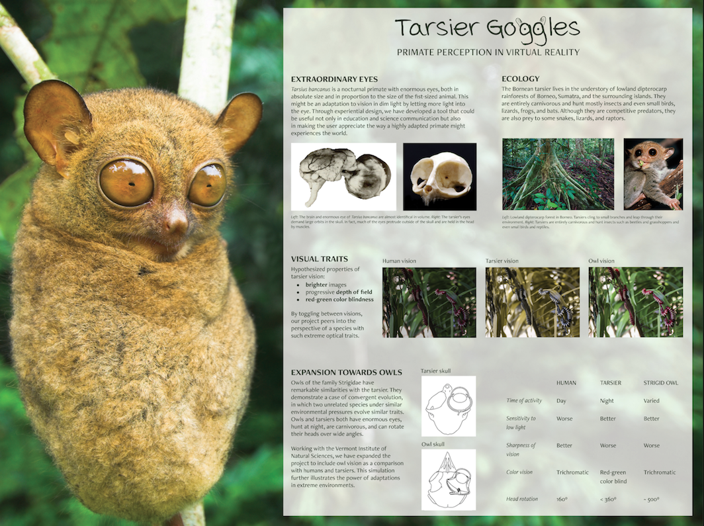

SAY HELLO
SAY HELLO



Built in Unity3D with SteamVR for the HTC Vive Pro. For functionalities like teleportation, splash screens, and tooltips for our tutorial, we use Virtual Reality Toolkit (VRTK), an open source library. For various visual effects, we used Unity’s built-in post-processing stack and downloaded assets. Our assets were built in Maya.
DALI LAB BLOG FOREST AT DUSK SCENE
VISION TOGGLE DEMO
FOREST AT DUSK SCENE
VISION TOGGLE DEMO
Tarsius bancanus, the Bornean tarsier, is a nocturnal primate with enormous eyes, both in absolute size and in proportion to the size of the 120-134g animal. Such extreme ocular hypertrophy might be an adaptation to vision in dim light, increasing visual sensitivity by maximizing the probability of photon capture. Through experiential design, this principle is demonstrated by outfitting humans with “tarsier goggles” that simulate the optics of tarsier eyes, highlighting red-green color blindness, increased brightness perception, and higher depth of field acuity.
My role in this project was as a Lead Developer at the DALI Lab. I worked on the initial ideation, onboarding new developers, demonstrating the project in multiple capacities, as well as the development itself. My main focuses were on creating and fine-tuning the brightness scene, employing the tools to create the blur and color filters, improving our teleport function, streamlining the user tutorial (by scripting in C#), and handling the toggle functionality. I also handled set-up and demonstration of the VR project to several classrooms of students at the Vermont Institute of Natural Science, during the Technigala at Dartmouth College, and at the Claire Garber Goodman Grant awards ceremony in Norwich. I am proud of and pleased with the progress and outreach our team has made over just a few short months, and look forward to continuing to grow with Tarsier Goggles.

 A FIRST VR EXPERIENCE
CLASSROOM DEMO
A FIRST VR EXPERIENCE
CLASSROOM DEMO
Developed at Dartmouth